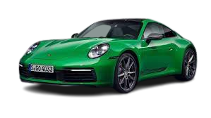
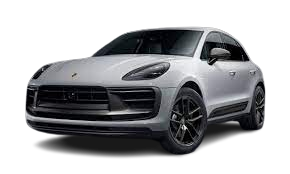
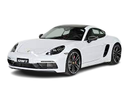

Porsche
A marca alemã Porsche foi fundada em 1931 por Ferdinand Porsche e o seu filho Ferry Porsche. Ferdinand Porsche já era conhecido antes de fundar a Porsche, ele havia trabalhado para outras marcas. Havia também lançado em 1900 o primeiro automóvel híbrido. Em 1934 Ferdinand Porsche, depois de lhe ser solicitado a criação de um automóvel acessível a todos os alemães, criou o Volkswagen Fusca. O Fusca serviu de base mecânica ao Type 64 criado em 1939 e ao Porsche 356 produzido em 1948, sendo este o primeiro Porsche a ser produzido.
Estes são alguns dos Porsches mais caros já vendido!
  Porsche 918 Spyder
O Porsche 918 Spyder é um dos modelos mais caros da montadora alemã, com um preço de cerca de US$ 1,5 milhão. Lançado em 2013, o 918 Spyder é um híbrido plug-in com um motor V8 de 4,6 litros e dois motores elétricos que geram uma potência combinada de 887 cavalos de potência. O carro é capaz de acelerar de 0 a 100 km/h em apenas 2,6 segundos e atingir uma velocidade máxima de 345 km/h. Com um design aerodinâmico e tecnologia avançada, o Porsche 918 Spyder é um dos modelos mais impressionantes da montadora alemã.
Porsche Carrera GT
Outro modelo caro da Porsche é o Carrera GT, que foi produzido entre 2004 e 2007. Com um preço de cerca de US$ 1 milhão, o Carrera GT é um supercarro com um motor V10 de 5,7 litros que gera uma potência de 612 cavalos. O carro é capaz de acelerar de 0 a 100 km/h em apenas 3,9 segundos e atingir uma velocidade máxima de 330 km/h. Com um design arrojado e tecnologia avançada, o Porsche Carrera GT é um dos modelos mais desejados pelos amantes de carros esportivos.
Porsche 911 GT1 Strassenversion
O Porsche 911 GT1 Strassenversion é um modelo raro e exclusivo da montadora alemã, produzido em apenas 25 unidades entre 1996 e 1998. Com um preço de cerca de US$ 5,6 milhões, o GT1 Strassenversion é um dos modelos mais caros e cobiçados da Porsche. Equipado com um motor de seis cilindros em linha e 3,2 litros que gera uma potência de 544 cavalos, o carro é capaz de acelerar de 0 a 100 km/h em apenas 3,7 segundos e atingir uma velocidade máxima de 308 km/h. Com um design aerodinâmico e uma história de sucesso nas corridas de endurance, o Porsche 911 GT1 Strassenversion é um verdadeiro ícone da marca.